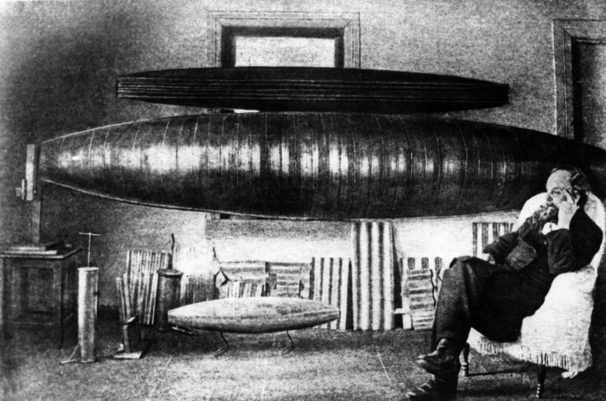
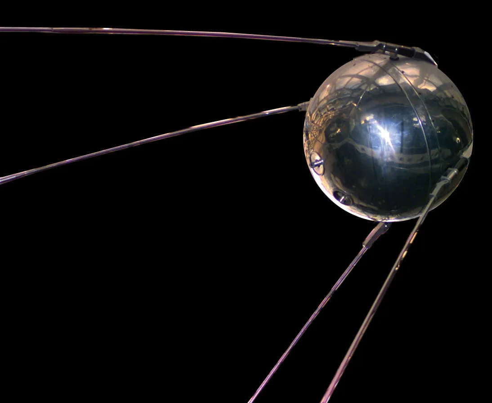
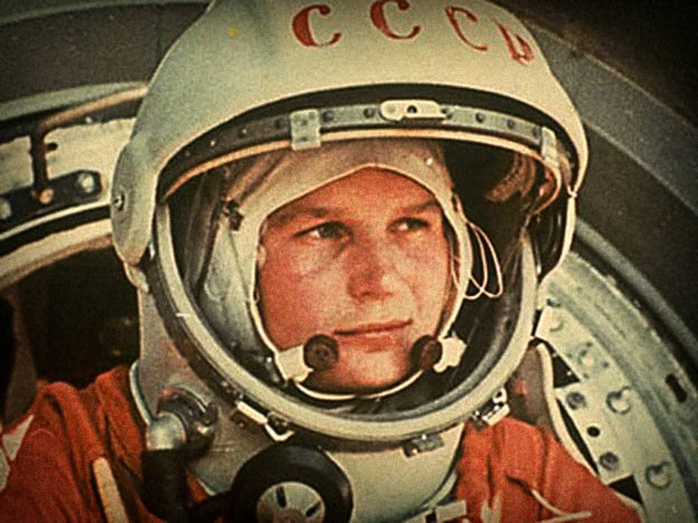
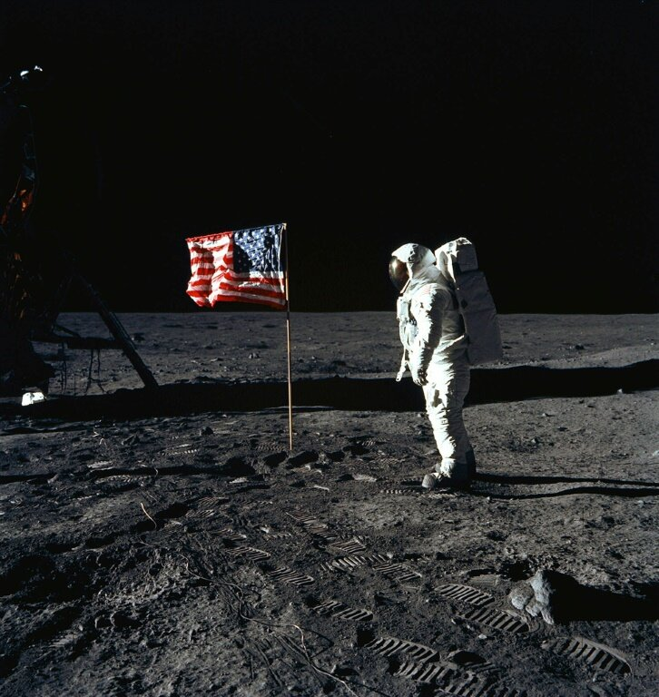
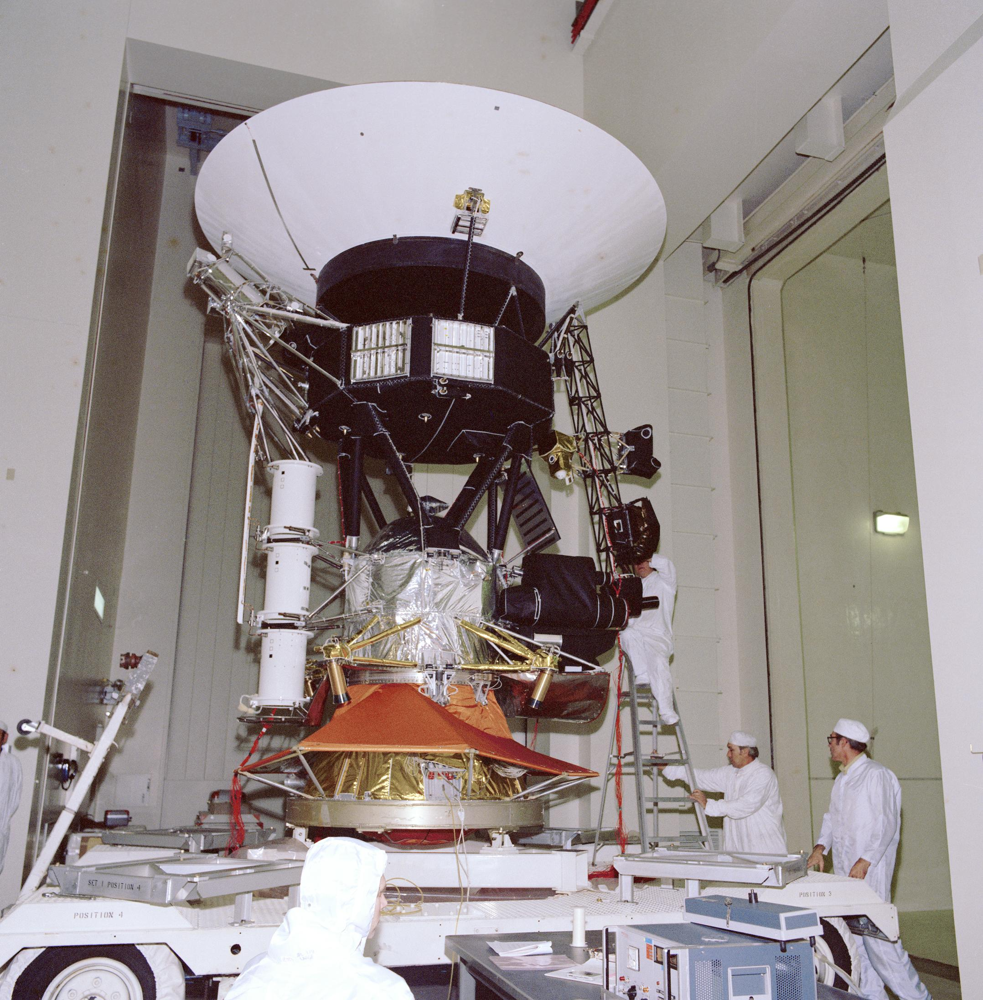

The History of Space Exploration
Early Rocketry and Theoretical Foundations
Space exploration traces its roots back to early rocketry. Scientists like Konstantin Tsiolkovsky laid the theoretical foundation for space travel in the late 19th and early 20th centuries. His rocket equation and vision of space stations inspired generations of scientists and engineers.
The Rise of Modern Rocketry
The early 20th century saw pioneers like Robert H. Goddard, who launched the first liquid-fueled rocket in 1926. Meanwhile, Germany's V-2 rocket program during World War II demonstrated the potential of modern rocketry, paving the way for space travel.

The Space Race
The Cold War fueled competition between the United States and the Soviet Union, leading to the Space Race. In 1957, the USSR launched Sputnik, the first artificial satellite. This was followed by the first human in space, Yuri Gagarin, in 1961. The race culminated with the Apollo 11 mission in 1969, when Neil Armstrong and Buzz Aldrin became the first humans to walk on the Moon.
  Advancements in Space Technology
Following the Moon landing, space exploration expanded with space stations, robotic missions, and interplanetary exploration. The International Space Station (ISS) became a symbol of global cooperation, while missions like Voyager, Hubble, and Mars rovers have deepened our understanding of the cosmos.
